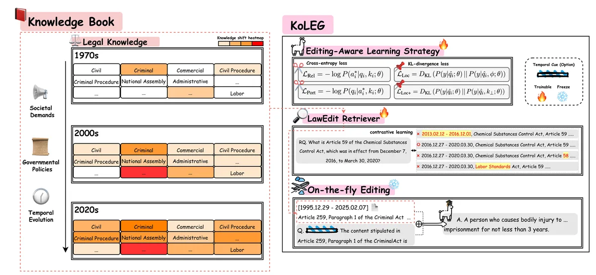

EMNLP 2025 · Findings
KoLEG: On-the-Fly Korean Legal Knowledge Editing with Continuous Retrieval

Abstract
Korean legal knowledge is subject to frequent temporal updates driven by societal needs and government policies. Even minor modifications to legal provisions can have significant consequences, yet continuously retraining large language models (LLMs) to incorporate such updates is resource-intensive and impractical. To address this, we propose KoLEG, an on-the-fly Korean Legal knowledge editing framework enhanced with continuous retrieval. KoLEG employs an Editing-Aware Learning Strategy and a LawEdit Retriever, which together adaptively integrate subtle linguistic nuances and continuous legislative amendments. To support this task, we construct the Korean Legislative Amendment Dataset, explicitly designed for continuous legal knowledge updates with attention to both temporal dynamics and linguistic subtleties. KoLEG outperforms existing locate-then-edit and retrieval-based editing methods, demonstrating superior effectiveness in legal knowledge editing while preserving linguistic capabilities. Furthermore, KoLEG maintains robust performance in sequential editing, improves performance on precedent application tasks, and is qualitatively validated by legal experts.
At a Glance
- Background
- Korean law evolves through frequent, fine-grained amendments; even minor wording changes carry legal weight, yet retraining an LLM for every revision is impractical
- Problem
- Edit legal knowledge on the fly, achieving edit success, preservation, and generalization under continuous sequential updates
- Method
-
- Editing-Aware Learning Strategy combined with continuous retrieval
- LawEdit Retriever for amendment-aware retrieval
- Korean Legislative Amendment Dataset, built for temporal dynamics and linguistic subtlety
- Timestamp-aware evaluation protocol
- Results
-
- Outperforms locate-then-edit and retrieval-based editing baselines while preserving linguistic capabilities
- Stays robust under sequential edits; improves precedent-application tasks
- Qualitatively validated by legal experts
- Role
-
- Designed and built the Korean law crawling pipeline: effective-date alignment, high-precision filtering, change tracking
- Implemented timestamp-aware evaluation and quality control
- Analyzed results and co-wrote the paper